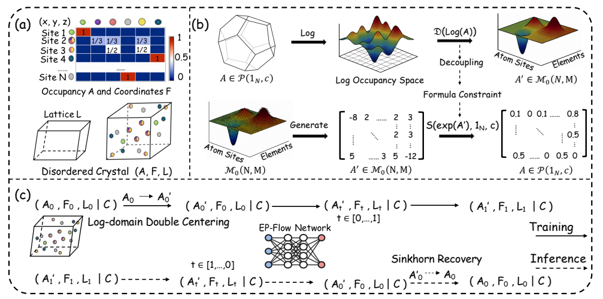

EP-Flow: Disordered Crystal Structure Prediction without Site-Level Annotations
NeurIPS 2026 · Accepted
Formula-conditioned generation of disordered crystal structures. EP-Flow jointly generates occupancies, atomic coordinates, and lattice parameters through flow matching with composition and site-occupancy constraints.